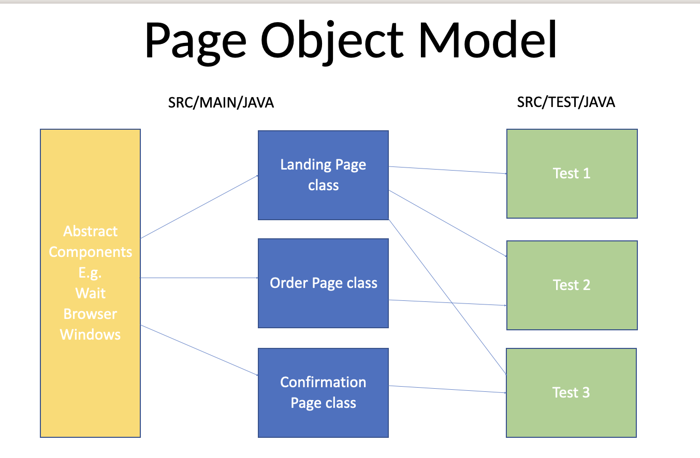

Menu
Home
Locators
Common Elements
Calendars, Tables and Grids
Sync
Actions
Page Object Model
Frames and Windows
Assert
Screenshots/SSL Cookies
File Downloads
Global Environment
Core Java
TestNG and Maven
Jenkins
->
Page Object Model
Page Object Model is a way to structure your code to make it more resuasble and easy to reconfigure. In a nutshell you are creating a class for each page on the web application and using Page Facotry to store the elements. Then you create methods for what you want to do e.g. click(). or sendKeys(). Then in your tests you create an object of the class and access the methods and pass any parameters.

Absract components
This is where you add common actions that can be used on multiple pages. For example, maximise browser or wait for elements to appear. In all of the Page Classes you need to extend the Abstract Component in the main method. Then again in Page Class create a constructor make sure you add super(driver); to allow the Page Class to inherit the abstract components.
Page Classes
This is where you add the elements that are on each page. For example, the LandingPage class would have things like email, password fields and login button. First, you need to initialize the driver by creating a new local Webdriver driver; Create a constructor and pass the Webdriver driver as parameters. Inside the constructor add This.driver=driver; Then use PageFactory to identify the elements (see next page) You can then create methods within this class which perform actions on this page. For example, sendKeys() or click() Then again in Page Class create a constructor make sure you add super(driver); to allow the Page Class to inherit the abstract components.
Page Facotry
PageFactory is a good way to identify and store your elements. First in your constructor initialize it and the driver: PageFactory.initElements(driver, this) Then outside of the constructor use @FindBy to list the elements and store them as WebElements @FindBy(id/xpath/css/class= ‘XXX’) WebElement XXX To see what you put after FindBy you can click on it and it will show you the exact wording needed for each tag type. Now you can create methods using these WebElements
Tests
So now when you create your tests you create new object of the class from the page class and you can then access the methods within it and pass parameters if required. LandingPage landingPage = new LandingPage; landingPage.login(“email@test.com”, “password1”);